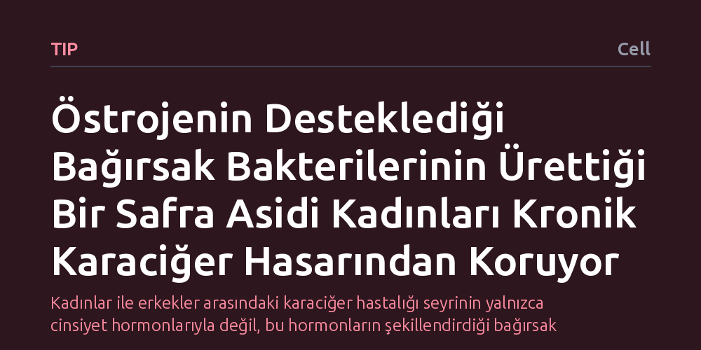

TIP · Cell · 2026-10-21
Araştırmacılar, kadınların kronik karaciğer hastalıklarına karşı neden daha korunaklı olduğunu ve bağırsak mikrobiyotasının bu korumadaki rolünü inceledi. Bulgular, östrojenin desteklediği bağırsak bakterilerince üretilen isoUDCA adlı safra asidinin kolesterol ve safra metabolizmasını düzenleyerek karaciğer hasarını belirgin biçimde azalttığını gösterdi.
Kadınlar ile erkekler arasındaki karaciğer hastalığı seyrinin yalnızca cinsiyet hormonlarıyla değil, bu hormonların şekillendirdiği bağırsak bakterileri ve onların ürettiği özgün metabolitlerle doğrudan ilişkili olduğunu ortaya koyuyor.

Klinik gözlemler uzun yıllardır kadınların menopoz öncesi dönemde kronik karaciğer hastalıklarına, özellikle alkole bağlı olmayan karaciğer yağlanmasına ve doku iltihabına karşı erkeklere göre daha dirençli olduğunu göstermektedir. Bu biyolojik avantaj genellikle kadın cinsiyet hormonu olan östrojenin genel etkileriyle açıklanmaya çalışılsa da korumanın altında yatan kesin biyokimyasal mekanizma uzun süredir tam olarak aydınlatılamamıştı. Karaciğer hastalıklarının dünya genelinde giderek artan bir halk sağlığı sorunu haline gelmesi, bu koruyucu kalkanın çözülmesini kritik kılmaktadır.
Araştırmacıların peşine düştüğü temel soru, östrojenin karaciğeri yalnızca doğrudan hormon reseptörleri aracılığıyla mı koruduğu, yoksa vücuttaki diğer sistemleri, özellikle sindirim sisteminde yaşayan trilyonlarca mikroorganizmayı devreye sokup sokmadığıydı. Bağırsak ile karaciğer arasındaki sıkı damarsal ve biyokimyasal iletişim, bağırsak bakterilerinin bu denklemde gizli bir aracı olabileceğini düşündürüyordu.
Bilim insanları bu soruyu yanıtlamak için bağırsak mikrobiyotası, safra asidi kimyası ve karaciğerdeki hücresel yolaklar arasındaki karmaşık ilişkiyi adım adım inceledi. Araştırmada östrojen hormonunun varlığında bağırsaktaki hangi bakteri topluluklarının baskın hale geldiği ve bu bakterilerin ürettiği metabolitlerin profili ileri metabolomik yöntemlerle çıkarıldı.
Analizler sonucunda elde edilen veriler, karaciğer hücrelerindeki gen ifadesi ve protein etkileşim deneyleriyle birleştirildi. Araştırmacılar özellikle karaciğerin kolesterol işleme kapasitesini ve safra asitlerinin sentez mekanizmasını yöneten moleküler anahtarları izleyerek bakteriyel ürünlerin hücre çekirdeğindeki etkilerini takip etti.
Elde edilen bulgular, östrojenin bağırsakta belirli bir bakteri konsorsiyumunun üremesini desteklediğini gösterdi. Kadınlarda daha yoğun bulunan bu özel bakteri topluluğu, besinlerin sindirimi sırasında "isoUDCA" (izo-ursodeoksikolik asit) adı verilen özgün bir ikincil safra asidi üretiyordu. Erkeklerde ve östrojen düzeyi düşük bireylerde bu safra asidinin seviyeleri belirgin şekilde daha düşüktü.
Üretilen isoUDCA kana karışarak karaciğere ulaştığında, hücrelerdeki "SREBP2-STARD4-CYP7B1" sinyal zincirini tetikliyordu. Bu moleküler yolak, karaciğer hücrelerinin biriken fazla kolesterolü güvenli biçimde işlemesini ve hücreye zarar veren toksik safra asitlerini zararsız hale getirmesini sağlıyordu. Böylece hücrelerde lipit birikimi ve iltihaplanma engellenerek kronik karaciğer hasarı hafifletiliyordu.
Bu çalışma, kadınların sahip olduğu biyolojik avantajın sırrının doğrudan hormon tedavisinden ziyade, hormonların mikrobiyotayı eğitmesi ve bakterilerin ürettiği koruyucu moleküller olduğunu ortaya koymaktadır. Hormon replasman tedavilerinin taşıdığı riskler düşünüldüğünde, doğrudan hormon vermek yerine bu bakteriyel metabolitin veya ilgili bakteri suşlarının kullanılması yeni bir tedavi ufku açmaktadır.
Bununla birlikte, bulguların laboratuvar ortamından çıkıp klinik bir ilaca veya probiyotik tedavisine dönüşebilmesi için insan deneklerde kapsamlı deneylerin yapılması gerekmektedir. Yine de bağırsak-karaciğer ekseninin bu denli net bir moleküler mekanizmayla aydınlatılması, hem kadınlarda menopoz sonrası artan karaciğer riskini hem de erkeklerdeki yüksek yatkınlığı hedefleyen hedefe yönelik yaklaşımlar için sağlam bir temel oluşturmaktadır.